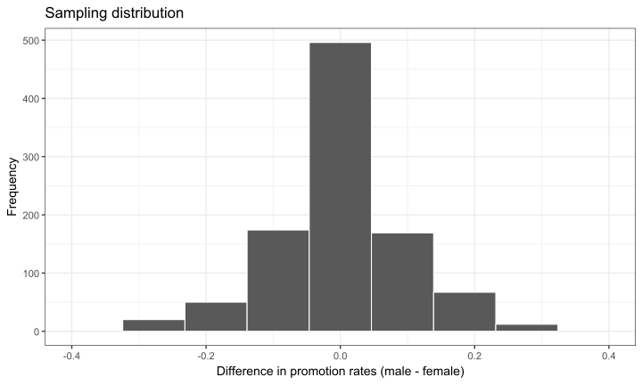

FMB819: R을 이용한 데이터분석
Confidence Intervals and Hypothesis Testing
Today’s Agenda
신뢰 구간(Confidence interval): 가능한 값의 범위 제공
가설 검정(Hypothesis testing: 그룹 간 통계량 비교
현실은?
실제로는 모집단에서 단 한 개의 표본만 추출할 수 있음 (1000개가 아님!).
또한, 모집단의 진짜 모수를 모르기 때문에 그것을 추정하는 것이 목표임.
그럼 우리가 방금 했던 모든 것은 무슨 의미가 있었을까? For fun?
비록 관찰할 수 없지만, 표본 분포는 실제로 존재하며, 더 나아가 우리는 그것이 어떻게 행동하는지 알고 있음!
이제 이것을 어떻게 활용할 수 있는지 살펴보자…
Confidence Intervals
점 추정에서 신뢰 구간으로
지금까지 우리는 표본에서 점 추정치만을 계산했음: 표본 평균, 표본 비율, 회귀 계수 등.
이 표본 통계량은 표본 변동성으로 인해 진짜 모집단 모수와 다를 수 있음.
점 추정치 대신, 모집단 모수에 대한 가능한 값의 범위를 제공할 수도 있음.
이것이 바로 신뢰 구간 (Confidence interval)이 제공하는 것임.
신뢰 구간 구축
신뢰 구간을 구축하는 여러 가지 방법이 있음:
이론적 접근: 수학적 공식 (중심 극한 정리)을 사용하여 특정 조건 하에서 점 추정치의 표본 분포를 유도함 →
R이 내부적으로 수행하는 방식!시뮬레이션 접근: 부트스트래핑(Bootstrapping) 방법을 사용하여 점 추정치의 표본 분포를 재구성함
우리는 개념을 직관적으로 이해하기 위해 시뮬레이션에 초점을 맞출 것이며, 수학적 접근법은 다음에 다룰 예정임.
실제로, 신뢰 구간을 계산할 때 부트스트래핑을 직접 수행할 필요 없음.
R이 통계적 이론을 사용하여 자동으로 계산해 줌.
다시 파스타로 돌아가기
현실처럼, 우리의 파스타 그릇에서 단 하나의 랜덤 표본만 얻을 수 있다고 가정하자.
표본 변동성(sampling variation)을 단일 표본으로 어떻게 연구할 수 있을까?
👉복원추출(bootstrap resampling)을 사용하면 됨!먼저, 우리의 그릇에서 크기 \(n = 50\)인 무작위 표본을 하나 추출해보자.
표본 재추출(Resampling)하기
- 부트스트랩(bootstrap) 표본을 어떻게 얻을 수 있을까?
표본에서 하나의 파스타를 무작위로 선택하고 해당 색상을 기록한다.
선택한 파스타를 표본에 다시 넣는다.
위의 1번과 2번 과정을 49번 반복하여, 새로운 표본의 크기가 원래 표본과 동일해질 때까지 진행한다.
부트스트랩 표본에서 녹색 파스타의 비율을 계산한다.
이 과정은 복원추출(resampling with replacement)이라고 불린다.
- 재추출(resampling): 하나의 표본에서 반복적으로 새로운 표본을 추출하는 과정.
- 복원추출(with replacement): 한 번 선택된 파스타를 다시 원래 표본에 포함시키는 방식.
표본 재추출(Resampling)하기
- 하나의 부트스트랩 표본 예시
one_bootstrap = my_sample %>%
rep_sample_n(size = 50, replace = TRUE) %>%
arrange(pasta_ID)
head(one_bootstrap, 8)# A tibble: 8 × 3
# Groups: replicate [1]
replicate pasta_ID color
<int> <int> <fct>
1 1 4 non-green
2 1 41 non-green
3 1 41 non-green
4 1 79 non-green
5 1 79 non-green
6 1 103 non-green
7 1 103 non-green
8 1 103 non-green[1] 50부트스트랩 분포 생성하기
- 표본 재추출(부트스트랩) 과정을 1,000번 반복하면,
1,000개의 부트스트랩 표본과 1,000개의 부트스트랩 추정값을 얻을 수 있음!
infer패키지를 사용하여 부트스트랩 수행
- 부트스트랩 결과 확인
Response: color (factor)
# A tibble: 6 × 2
replicate stat
<int> <dbl>
1 1 0.44
2 2 0.36
3 3 0.46
4 4 0.46
5 5 0.52
6 6 0.52[1] 1000부트스트랩 표본의 변동성을 시각화해보자!
부트스트랩 분포
- 부트스트랩 분포는 표본 분포를 근사하는 역할을 함.
부트스트랩 분포와 평균
- 부트스트랩 분포의 평균은 원래 표본 비율과 매우 가까움.
부트스트랩 분포와 평균

- 이제 이 부트스트랩 분포를 이용해 신뢰 구간을 만들어보자!
신뢰 구간 이해하기
낚시에 비유:
점 추정치(point estimate): 작살로 물고기를 잡기.
신뢰 구간(confidence interval): 그물로 물고기를 잡기.
여기서 물고기는 전체 그릇에서 초록색 파스타의 실제 비율 \((p)\).
점 추정치는 표본에서 얻은 초록색 파스타의 비율 \((\hat{p})\).
신뢰 구간: 이전 부트스트랩 분포에서, 대부분의 비율이 어디에 위치하는가?
신뢰 구간을 구성하는 방법: 백분위수(percentile) 방법.
신뢰 수준 confidence level을 지정해야 함: 일반적으로 90%, 95%, 99% 사용.
백분위수 방법: 95% 신뢰 구간
부트스트랩 분포에서 중앙 95%의 값을 사용하여 신뢰 구간을 생성.
이를 위해 2.5% 및 97.5% 백분위수를 계산:
따라서 95% 신뢰 구간은 \([0.32 ; 0.6]\).
이는 값의 범위(range).
신뢰 구간을 표본 분포에서 확인해 보자.
백분위수 방법: 95% 신뢰 구간 시각화
- 신뢰 구간이 모집단의 실제 비율을 포함하는가?
백분위수 방법: 95% 신뢰 구간 시각화
- 모집단의 실제 모수값이 95% 신뢰 구간 내에 포함됨! 항상 그런가?
95% 신뢰 구간 해석
bowl에서 100개의 서로 다른 표본을 반복적으로 추출하고, 각 표본에 대해 백분위수 방법을 사용하여 95% 신뢰 구간을 계산함.
- 얼마나 많은 신뢰구간이 실제 모수값을 포함하고 있는가? 왜 그럴까?
95% 신뢰 구간 해석
정확한 해석: 표본추출 과정을 매우 여러 번 반복한다고 가정하면, 생성된 신뢰구간의 약 95%가 모집단의 참된 모수를 포함할 것으로 기대됨.
- 즉, 95% 신뢰구간은 95%의 확률로 모집단 모수를 포함하는 것이 아니라, 동일한 방법으로 신뢰구간을 반복적으로 생성했을 때, 약 95%의 신뢰구간이 모집단 모수를 포함할 것을 의미함.
간단한 해석: 우리는 모집단 모수를 포함할 가능성이 95%인 신뢰구간을 얻었다고 말할 수 있음.
질문:
신뢰수준이 증가하면 신뢰구간의 폭은 어떻게 변할까?
표본 크기가 증가하면 신뢰구간의 폭은 어떻게 변할까?
95% 신뢰 구간 해석
정확한 해석: 표본추출 과정을 매우 여러 번 반복한다고 가정하면, 생성된 신뢰구간의 약 95%가 모집단의 참된 모수를 포함할 것으로 기대됨.
- 즉, 95% 신뢰구간은 95%의 확률로 모집단 모수를 포함하는 것이 아니라, 동일한 방법으로 신뢰구간을 반복적으로 생성했을 때, 약 95%의 신뢰구간이 모집단 모수를 포함할 것을 의미함.
간단한 해석: 우리는 모집단 모수를 포함할 가능성이 95%인 신뢰구간을 얻었다고 말할 수 있음.
신뢰수준의 영향: 신뢰수준이 증가할수록 신뢰구간은 더 넓어짐.
- 직관적 이해: 신뢰수준이 높아질수록, 신뢰구간이 모집단 모수를 포함해야 하는 빈도가 증가해야 하므로, 이를 보장하기 위해 신뢰구간이 더 넓어짐.
표본 크기의 영향: 표본 크기가 커질수록 신뢰구간은 더 좁아짐.
- 직관적 이해: 표본 크기가 커질수록 표본추출에 따른 변동(샘플링 변동)이 줄어들며, 따라서 부트스트랩 분포의 분산이 감소함. 결과적으로 신뢰구간이 더 좁아짐.
신뢰구간에서 가설검정으로
신뢰구간은 점 추정(point estimation)의 확장으로 볼 수 있음.
하지만 우리가 두 그룹 간의 표본 통계를 비교하고 싶다면?
- 예시: 남성과 여성 간의 평균 임금 차이. 이 차이가 유의미한(significant) 차이일까?
이러한 비교는 가설검정(hypothesis testing)의 영역임.
신뢰구간과 마찬가지로, 가설검정도 모집단에 대한 주장을 표본 정보를 기반으로 판단하는 데 사용됨.
그러나 이러한 추론을 수행하는 방법론적 틀이 신뢰구간과는 약간 다름.
Hypothesis Testing
은행 승진에서 성차별이 존재하는가?
1974년 Journal of Applied Psychology에 게재된 논문에서는 은행 여성 직원들이 차별을 받았는지 조사함.
48명의 (남성) 관리자에게 동일한 지원자 이력서를 제공하되, 이름만 남성 또는 여성으로 변경하여 실험을 진행함.
- 각 이력서는 “직원을 지점장으로 승진시킬지 여부를 결정하는 요청 메모 형식”으로 작성됨.
검증하고자 하는 가설: 승진에서 성차별이 존재하는가?
차별의 증거가 있는가?
- 지원 여부에 따라 남성과 여성의 승진 횟수를 확인.
# A tibble: 4 × 4
# Groups: gender [2]
gender decision n percentage
<fct> <fct> <int> <dbl>
1 male not 3 12.5
2 male promoted 21 87.5
3 female not 10 41.7
4 female promoted 14 58.3- 남성과 여성 간 승진률 차이는 29.2%포인트임!
- 질문:
- 이 차이가 결정적인 증거인가?
- 남성과 여성 간 승진률 차이가 우연히 발생할 가능성은 없는가?
가상의 세계 설정: 성차별이 없는 경우
만약 성차별이 전혀 존재하지 않는 세상이 있다면? 승진 결정은 성별과 완전히 독립적이어야 함.
이를 실험적으로 재현하기 위해, 기존 데이터에서
gender변수를 무작위로 섞어(shuffle)
각 행에 다시 할당한 후, 승진율이 어떻게 변하는지 살펴보자.
# A tibble: 6 × 4
id decision gender shuffled_gender
<int> <fct> <fct> <fct>
1 1 promoted male female
2 2 promoted male female
3 3 promoted male male
4 4 promoted male female
5 5 promoted male male
6 6 promoted male male - 재배열된 샘플에서 승진률은 어떻게 나타날까?
# A tibble: 4 × 4
# Groups: gender [2]
gender decision n percentage
<fct> <fct> <int> <dbl>
1 male not 6 25
2 male promoted 18 75
3 female not 7 29.2
4 female promoted 17 70.8- 무작위로 섞인 후 승진율 차이는 4.2%포인트로 감소함!
가상의 세계 설정: 성차별이 없는 경우
만약 성차별이 전혀 존재하지 않는 세상이 있다면? 승진 결정은 성별과 완전히 독립적이어야 함.
이를 실험적으로 재현하기 위해, 기존 데이터에서
gender변수를 무작위로 섞어(shuffle)
각 행에 다시 할당한 후, 승진율이 어떻게 변하는지 살펴보자.
# A tibble: 6 × 4
id decision gender shuffled_gender
<int> <fct> <fct> <fct>
1 1 promoted male female
2 2 promoted male female
3 3 promoted male male
4 4 promoted male female
5 5 promoted male male
6 6 promoted male male - 재배열된 샘플에서 승진률은 어떻게 나타날까?
표본 변동성(Sampling Variation)
가상의 세계에서 승진율 차이는 4.2%포인트에 불과했음.
그렇다면, 이제 성차별이 존재하는지 확실히 답할 수 있을까?
No! 표본 변동성을 고려해야 함!
- 한 번 더 무작위 재배열(shuffling)을 하면, 4.2%포인트와 얼마나 다른 결과가 나올까?
- 즉, 4.2%포인트라는 값이 가상의 세계에서 얼마나 대표적인 값인지 평가해야 함.
- 더 나아가, 가상의 세계에서 29.2%포인트 차이가 발생할 확률은 얼마나 될까?
- 한 번 더 무작위 재배열(shuffling)을 하면, 4.2%포인트와 얼마나 다른 결과가 나올까?
“성차별이 없다”는 가설하에서 전체 샘플 분포를 살펴보아야 함.
어떻게? 무작위 재배열을 아주 많이 반복하고, 매번 승진율 차이를 계산.
1000번의 무작위 재배열로 표본 분포 생성
1000번의 무작위 재배열로 표본 분포 생성
- 성차별이 없다고 가정했을 때, 0.292 차이가 발생할 확률은 얼마나 될까?
방금 뭘한 것이지?
우리는 가설 검정(hypothesis testing) 절차를 실행했으며, 그중에서도 순열 검정(permutation test) 을 사용함.
질문: 성차별이 없는 가상의 세계에서, 실제 관측된 승진율 차이가 발생할 가능성은 얼마나 될까?
결론: 그럴 가능성이 낮음 → 따라서 우리는 “성차별이 없다”는 가설을 기각할 가능성이 높음.
이제부터 가설 검정의 공식적인 이론적 틀을 소개함.
가설 검정의 표기법과 정의
가설 검정(hypothesis test) 은 두 개의 경쟁 가설 을 비교하는 과정임:
귀무가설(null hypothesis, \(H_0\)): 일반적으로 차이가 없다는 가설을 의미함.
대립가설(alternative hypothesis, \(H_A\) 또는 \(H_1\)): 연구자가 주장하는 가설.
앞선 승진 실험의 경우: \[\begin{align}H_0&: p_m - p_f = 0\\H_A&: p_m - p_f > 0,\end{align}\] 여기서 \(p_m =\) 남성의 승진 비율, \(p_f =\) 여성의 승진 비율.
- 위의 대립가설은 한쪽 검정(one-sided test) 으로, \(p_m > p_f\), 즉 여성에게 차별이 존재한다고 주장함.
- 양쪽 검정(two-sided test) 의 경우 \(H_A: p_m - p_f \neq 0\) 로 표현됨.
가설 검정의 표기법과 정의
검정 통계량(test statistic): 가설 검정을 위해 사용되는 점 추정값 또는 표본 통계량.
- 앞선 사례에서: 표본 비율 차이 \(\hat{p}_m - \hat{p}_f\).
관측된 검정 통계량(observed test statistic): 실제 데이터에서 관측된 검정 통계량의 값.
- 앞선 사례에서: 실제 관측된 차이 \(\hat{p}_m - \hat{p}_f = 0.292 = 29.2\%\)포인트.
귀무분포(null distribution): 귀무가설 \(H_0\) 이 참이라고 가정했을 때 검정 통계량의 표본 분포.
- 앞선 사례에서: 차별이 없다고 가정했을 때 \(\hat{p}_m - \hat{p}_f\) 가 가질 수 있는 모든 값들의 분포.
- 바로 우리가 앞서 본 분포임.
귀무분포 (Null Distribution)
가설 검정의 표기법과 정의
p-값(p-value): 귀무가설 \(H_0\) 이 참일 때, 우리가 관측한 검정 통계량과 같거나 더 극단적인 값을 관측할 확률.
귀무가설 \(H_0\) 이 참이라면, 즉 차별이 없는 세상에서 우리가 0.292의 승진 비율 차이를 관측한 것이 얼마나 놀라운 일인가? 매우 놀라운가? 약간 놀라운가?
더 극단적인 값이란 무엇인가?
- 대립가설에 따라 정의됨: 이 경우, 남성이 여성보다 승진할 가능성이 더 높다는 가정. 따라서, 더 극단적인 값이란 0.292보다 더 큰 승진 비율 차이를 의미함.
해석: p-값이 작을수록, 관측된 통계량이 귀무가설과 일치하지 않을 가능성이 높음.
언제 귀무가설 \(H_0\) 을 기각할지 결정하는 기준은?
가설 검정의 표기법과 정의
귀무가설 \(H_0\) 을 기각할지 여부를 결정하기 위해 유의수준을 설정함.
유의수준 \((\alpha)\): p-값의 컷오프 기준 역할을 함.
- 일반적으로 사용되는 값: \(\alpha = 0.01\), \(0.05\), 또는 \(0.1\).
판단 기준:
p-값이 유의수준 \(\alpha\)보다 작으면, “\(\alpha\) 유의수준에서 귀무가설을 기각한다.”
반대로, p-값이 \(\alpha\)보다 크면, “\(\alpha\) 유의수준에서 귀무가설을 기각할 수 없다.”라고 표현함.
해석: 귀무가설이 참일 때 관측값이 너무 일어날 가능성이 낮다면, 해당 가설이 거짓일 가능성이 높음.
우리 예제에서 이를 어떻게 적용하는지 살펴보자.
p-value 시각화
- 검은 부분이 p-value에 해당!
p-value 계산 및 의사 결정
- p-값의 정의를 다시 떠올려 보자: 귀무가설 \(H_0\)이 참이라고 가정할 때, 우리가 얻은 통계량보다 같거나 더 극단적인* 값을 관측할 확률.*
[1] 0.007차별이 없는 세상에서는 \(\hat{p_m} - \hat{p_f}\) 값이 0.292 이상일 확률이 r 100*p_value%에 불과함.
따라서 5% 유의수준에서 귀무가설 \(H_0\) (즉, 차별이 없다는 가설)을 기각할 수 있음.
- 즉, \(\hat{p_m} - \hat{p_f} = 0.292\)는 5% 유의수준에서 0과 통계적으로 유의미하게 다름.
질문: 만약 유의수준을 \(\alpha = 0.01 = 1%\)로 설정했다면, 차별이 없다는 가설을 기각할 수 있었을까?
검정 오류 (Testing Errors)
확률을 다루기 때문에 오류를 범할 수 있음.
29%p 차이는 \(H_0\) 하에서 드물게 발생할 수 있지만, 절대 불가능한 것은 아님.
- 실제로, 이러한 차이(또는 더 큰 차이)는 약 0.007%의 확률로 발생할 수 있음.
따라서, 때때로 우리는 \(H_0\)를 기각하지만, 사실 \(H_0\)가 참일 수도 있음.
- 5% 유의 수준을 설정하면, 이러한 오류가 5%를 넘지 않도록 보장할 수 있음.
검정 오류 (Testing Errors)
- 가설 검정에서는 두 가지 유형의 오류가 존재함.

제1종 오류 (Type I Error): 귀무가설(\(H_0\))이 참인데도 이를 기각하는 경우. 거짓 양성 (False Positive)
제2종 오류 (Type II Error): 귀무가설(\(H_0\))이 거짓인데도 이를 기각하지 않는 경우. 거짓 음성 (False Negative)
- 실제로, 우리는 제1종 오류의 발생 빈도를 \(\alpha\) 로 설정하여 통제하고, 제2종 오류를 최소화하려고 노력함.
이 모든 것이 회귀 분석과 어떻게 관련될까?
이제 통계적 추론 (statistical inference) 을 실제로 수행할 수 있는 모든 도구를 갖춤!
회귀 분석은 표본 데이터 (sample) 를 기반으로 함.
따라서 회귀 계수 (regression coefficient) 도 표본 변동성 (sampling variation) 에 영향을 받으며, 이는 모집단의 참된 계수가 아님.
질문: 추정된 효과가 특정 값 \(z\) 와 통계적으로 유의미하게 다른가? 다음 시간! 🐵
🔍 인과 관계를 찾아가는 길
✅ 데이터를 어떻게 다룰까?: 읽기(Read), 정리(Tidy), 시각화(Visualize)…
✅ 변수간 관계를 어떻게 요약할까? 단순 / 다중 선형 회귀…비선형회귀, 교차변수…
✅ 인과 관계(Causality)란 무엇인가?
✅ 전체 모집단을 관측하지 못하면 어떻게 할까? Sampling!
🚧 우리의 연구 결과가 단순한 무작위(Randomness) 때문일 수도 있을까? 신뢰구간과 가설검정..
❌ 실제로 외생성을 어떻게 찾아낼 수 있을까?
THE END!
Appendix: code to generate the null distribution
null_distribution <- promotions %>%
# takes formula, defines success
specify(formula = decision ~ gender,
success = "promoted") %>%
# decisions are independent of gender
hypothesize(null = "independence") %>%
# generate 1000 reshufflings of data
generate(reps = 1000, type = "permute") %>%
# compute p_m - p_f from each reshuffle
calculate(stat = "diff in props",
order = c("male", "female"))
visualize(null_distribution,
bins = 10,
fill = "#d90502") +
labs(title = "Sampling distribution",
x = "Difference in promotion rates (male - female)",
y = "Frequency") +
xlim(-0.4, 0.4) +
theme_bw(base_size = 14)